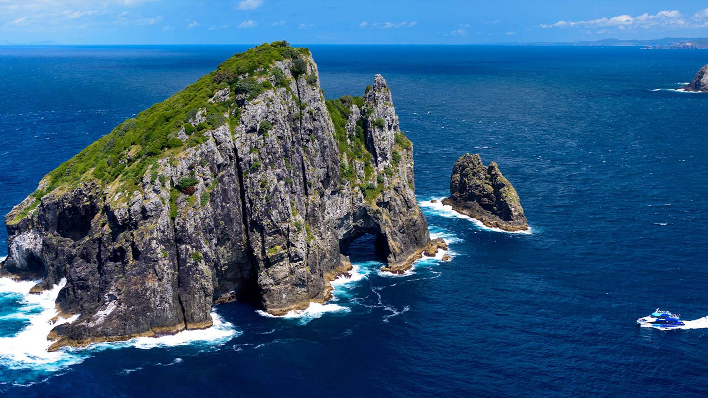

The Hole in the Rock, located on Piercy Island in the Bay of Islands, is a striking natural archway that boats can pass through, offering a unique and scenic maritime experience surrounded by rugged coastal beauty.
Cape Reinga, the northernmost point of New Zealand, features a dramatic coastline where the Tasman Sea meets the Pacific Ocean, marked by its iconic lighthouse and sweeping, windswept vistas.
Taumatawhakatangihangakoauauotamateaturipukaka pikimaungahoronukupokaiwhenuakitanatahu is a hill in Hawke’s Bay, famous for its exceptionally long Māori name, which describes a legendary figure playing his flute.

Hobbiton, located in Matamata, is a picturesque movie set depicting the charming village from "The Lord of the Rings" and "The Hobbit," featuring whimsical hobbit holes and lush, rolling landscapes.
Trips to the South Pole from New Zealand typically depart from Christchurch, offering adventurous travelers a rare and exhilarating journey to the frozen, remote landscape of the Antarctic continent, with its stark beauty and unparalleled solitude.